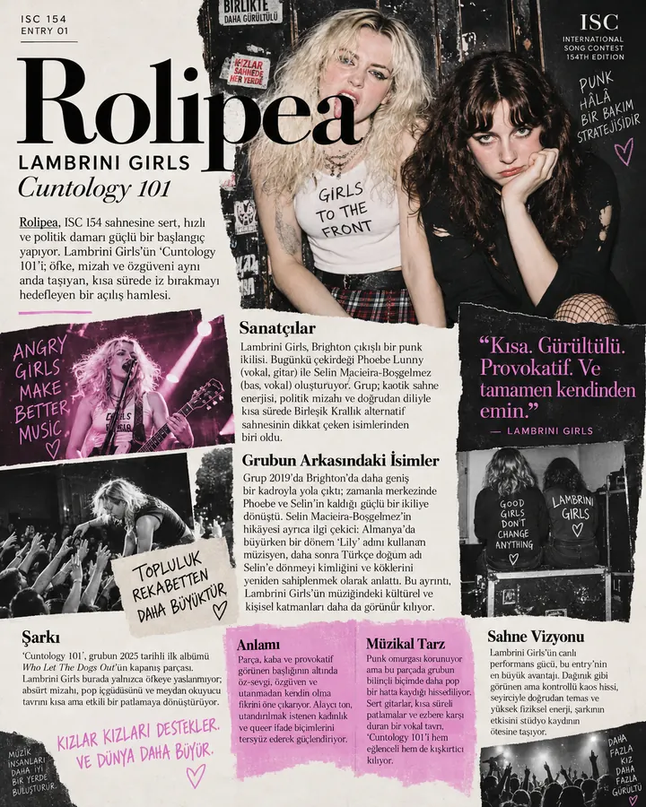

Delegasyonunu doğrula.
Ülkeni seç, mevcut delegasyon kodunu gir. Bu tarayıcıda doğrulandıktan sonra tekrar kod istemeyiz.
International Song Contest · New edition
Yeni dönem başladı.
Sıradaki şarkıyı sen getir.
Delegasyonlar resmi ISC 155 entry’lerini doğrudan siteden gönderebilir. Tek ihtiyacın delegasyon kodun ve YouTube, YouTube Music veya Spotify’daki şarkı bağlantın.

“Cuntology 101” · ROLIPEA
Line-up henüz açıklanmadı. Önce delegasyonların seçimlerini topluyoruz; yayınlanan liste yalnızca başvuru dönemi tamamlandıktan sonra sahneye çıkacak.
Yeni bir hesap açmıyorsun. Mevcut delegasyon kodunla kimliğini doğruluyor, entry bilgilerini giriyor ve gönderiyorsun.
Ülkeni seç, mevcut delegasyon kodunu gir. Bu tarayıcıda doğrulandıktan sonra tekrar kod istemeyiz.
Sanatçı adı, şarkı adı ve tek bir geçerli YouTube, YouTube Music veya Spotify track bağlantısı yeterli.
Başvuru penceresi açık kaldığı sürece resmî entry’ni değiştirebilirsin. Her revizyon güvenli biçimde kaydedilir.
Başvurunun müzik kaynağını otomatik tanıyoruz. Playlist, profil ve albüm linkleri yerine doğrudan şarkı/video bağlantısı gönder.
ISC 155’in sayfası yarışmayla birlikte gelişecek. Başvuru aşaması tamamlandığında aynı site line-up, dinleme, oylama ve sonuç deneyimine dönüşecek.
Delegasyon seçimleri alınıyor.
Katılımcılar ve şarkılar açıklanacak.
Resmî playlistler ve voting room açılacak.
Canlı final ve scoreboard dönemi.
Tamamlanan edisyonlar, katılımcılar, sonuçlar ve hikâyeler kalıcı arşivde yaşamaya devam eder. Ana sayfa ise her zaman sıradaki yarışmaya bakar.